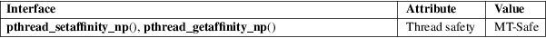

pthread_setaffinity_np, pthread_getaffinity_np − set/get CPU affinity of a thread
POSIX threads library (libpthread, −lpthread)
#define
_GNU_SOURCE /* See feature_test_macros(7) */
#include <pthread.h>
int
pthread_setaffinity_np(pthread_t thread,
size_t cpusetsize,
const cpu_set_t *cpuset);
int pthread_getaffinity_np(pthread_t thread,
size_t cpusetsize,
cpu_set_t *cpuset);
The pthread_setaffinity_np() function sets the CPU affinity mask of the thread thread to the CPU set pointed to by cpuset. If the call is successful, and the thread is not currently running on one of the CPUs in cpuset, then it is migrated to one of those CPUs.
The pthread_getaffinity_np() function returns the CPU affinity mask of the thread thread in the buffer pointed to by cpuset.
For more details on CPU affinity masks, see sched_setaffinity(2). For a description of a set of macros that can be used to manipulate and inspect CPU sets, see CPU_SET(3).
The argument cpusetsize is the length (in bytes) of the buffer pointed to by cpuset. Typically, this argument would be specified as sizeof(cpu_set_t). (It may be some other value, if using the macros described in CPU_SET(3) for dynamically allocating a CPU set.)
On success, these functions return 0; on error, they return a nonzero error number.
|
EFAULT |
A supplied memory address was invalid. | ||
|
EINVAL |
(pthread_setaffinity_np()) The affinity bit mask mask contains no processors that are currently physically on the system and permitted to the thread according to any restrictions that may be imposed by the "cpuset" mechanism described in cpuset(7). | ||
|
EINVAL |
(pthread_setaffinity_np()) cpuset specified a CPU that was outside the set supported by the kernel. (The kernel configuration option CONFIG_NR_CPUS defines the range of the set supported by the kernel data type used to represent CPU sets.) | ||
|
EINVAL |
(pthread_getaffinity_np()) cpusetsize is smaller than the size of the affinity mask used by the kernel. | ||
|
ESRCH |
No thread with the ID thread could be found. |
For an explanation of the terms used in this section, see attributes(7).

GNU; hence the suffix "_np" (nonportable) in the names.
glibc 2.3.4.
In glibc 2.3.3 only, versions of these functions were provided that did not have a cpusetsize argument. Instead the CPU set size given to the underlying system calls was always sizeof(cpu_set_t).
After a call to pthread_setaffinity_np(), the set of CPUs on which the thread will actually run is the intersection of the set specified in the cpuset argument and the set of CPUs actually present on the system. The system may further restrict the set of CPUs on which the thread runs if the "cpuset" mechanism described in cpuset(7) is being used. These restrictions on the actual set of CPUs on which the thread will run are silently imposed by the kernel.
These functions are implemented on top of the sched_setaffinity(2) and sched_getaffinity(2) system calls.
A new thread created by pthread_create(3) inherits a copy of its creator’s CPU affinity mask.
In the following program, the main thread uses pthread_setaffinity_np() to set its CPU affinity mask to include CPUs 0 to 7 (which may not all be available on the system), and then calls pthread_getaffinity_np() to check the resulting CPU affinity mask of the thread.
#define
_GNU_SOURCE
#include <err.h>
#include <errno.h>
#include <pthread.h>
#include <stdio.h>
#include <stdlib.h>
int
main(void)
{
int s;
cpu_set_t cpuset;
pthread_t thread;
thread = pthread_self();
/* Set affinity mask to include CPUs 0 to 7. */
CPU_ZERO(&cpuset);
for (size_t j = 0; j < 8; j++)
CPU_SET(j, &cpuset);
s =
pthread_setaffinity_np(thread, sizeof(cpuset), &cpuset);
if (s != 0)
errc(EXIT_FAILURE, s,
"pthread_setaffinity_np");
/* Check the actual affinity mask assigned to the thread. */
s =
pthread_getaffinity_np(thread, sizeof(cpuset), &cpuset);
if (s != 0)
errc(EXIT_FAILURE, s,
"pthread_getaffinity_np");
printf("Set
returned by pthread_getaffinity_np() contained:\n");
for (size_t j = 0; j < CPU_SETSIZE; j++)
if (CPU_ISSET(j, &cpuset))
printf(" CPU %zu\n", j);
exit(EXIT_SUCCESS);
}
sched_setaffinity(2), CPU_SET(3), pthread_attr_setaffinity_np(3), pthread_self(3), sched_getcpu(3), cpuset(7), pthreads(7), sched(7)